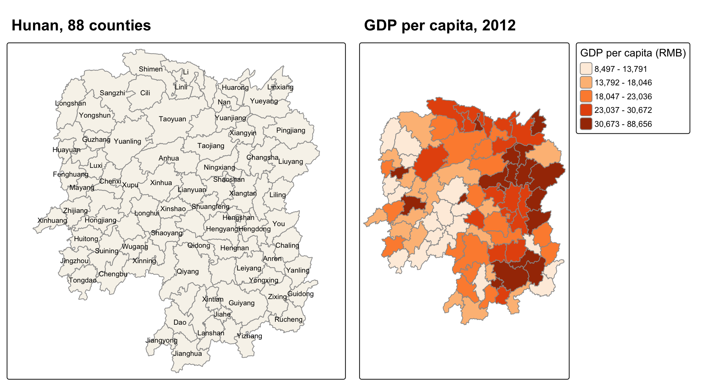
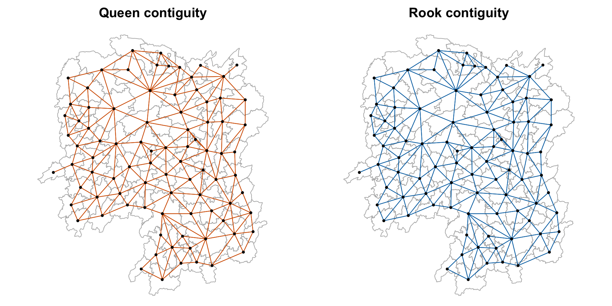
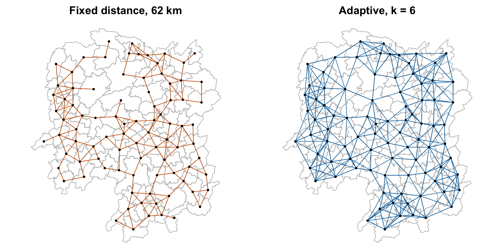
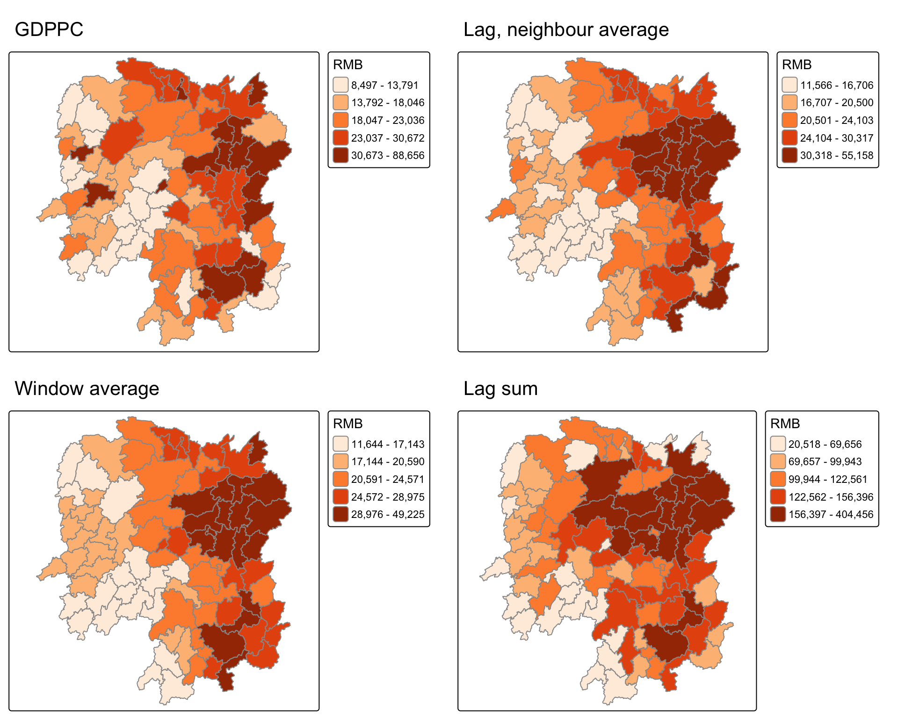
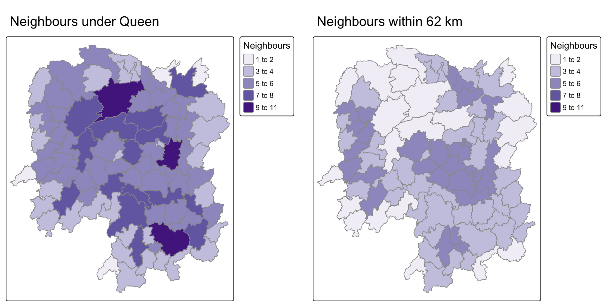
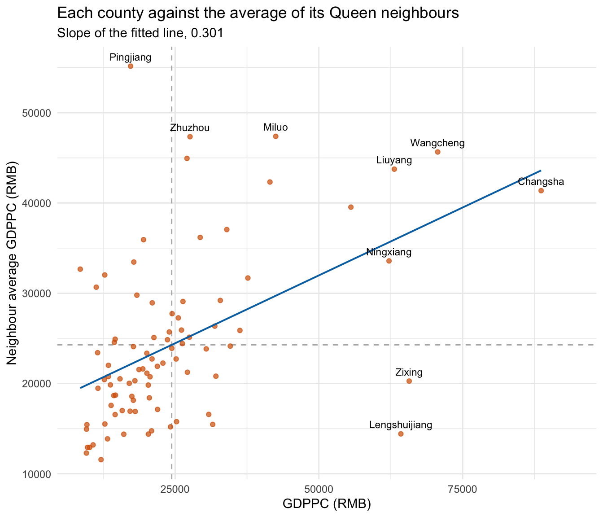

pacman::p_load(sf, spdep, tmap, tidyverse, knitr, ggrepel)Hands-on Exercise 4
Spatial Weights and Applications
88 counties of Hunan, one year of indicators Hunan shapefile, Hunan_2012.csv sf spdep tmap tidyverse knitr ggrepel
1 Overview
Exercise 1 was about choropleth maps and the last two were about points. This one is about areas and spatial weights, which the later chapters depend on. Before asking whether rich counties sit next to rich counties, I have to decide what “next to” means. The spatial weights matrix records that choice.
The chapter builds several of them for the 88 counties of Hunan and uses them to compute a spatially lagged GDP per capita. The tests come in the next chapter.
2 Loading the Packages
Only one package is new. spdep builds neighbour lists and weights and computes the lags. sf reads the county boundaries and handles geometry, and tmap draws the maps. tidyverse reads the csv, joins the tables and draws the scatter plot with ggplot2. knitr prints tables with kable(). I added ggrepel so the scatter plot labels do not cover the points or the fitted line.
3 Preparing the Data
There are three steps. I read the boundaries, read the indicators, and join them.
st_read() of sf reads the Hunan county boundaries from the shapefile.
hunan <- st_read(dsn = "data/geospatial", layer = "Hunan")Reading layer `Hunan' from data source
`/Users/czxtom/Documents/Programming/GAA/ISSS626-GAA/Hands-on_Ex/Hands-on_Ex04/data/geospatial'
using driver `ESRI Shapefile'
Simple feature collection with 88 features and 7 fields
Geometry type: POLYGON
Dimension: XY
Bounding box: xmin: 108.7831 ymin: 24.6342 xmax: 114.2544 ymax: 30.12812
Geodetic CRS: WGS 84There are 88 polygons in WGS 84. The County column is the join key for the next step.
read_csv() of readr reads the 2012 indicators, and glimpse() of dplyr shows every column with its type.
hunan2012 <- read_csv("data/aspatial/Hunan_2012.csv")
glimpse(hunan2012)Rows: 88
Columns: 29
$ County <chr> "Anhua", "Anren", "Anxiang", "Baojing", "Chaling", "Changn…
$ City <chr> "Yiyang", "Chenzhou", "Changde", "Hunan West", "Zhuzhou", …
$ avg_wage <dbl> 30544, 28058, 31935, 30843, 31251, 28518, 54540, 28597, 33…
$ deposite <dbl> 10967.0, 4598.9, 5517.2, 2250.0, 8241.4, 10860.0, 24332.0,…
$ FAI <dbl> 6831.7, 6386.1, 3541.0, 1005.4, 6508.4, 7920.0, 33624.0, 1…
$ Gov_Rev <dbl> 456.72, 220.57, 243.64, 192.59, 620.19, 769.86, 5350.00, 1…
$ Gov_Exp <dbl> 2703.0, 1454.7, 1779.5, 1379.1, 1947.0, 2631.6, 7885.5, 11…
$ GDP <dbl> 13225.0, 4941.2, 12482.0, 4087.9, 11585.0, 19886.0, 88009.…
$ GDPPC <dbl> 14567, 12761, 23667, 14563, 20078, 24418, 88656, 10132, 17…
$ GIO <dbl> 9276.90, 4189.20, 5108.90, 3623.50, 9157.70, 37392.00, 513…
$ Loan <dbl> 3954.90, 2555.30, 2806.90, 1253.70, 4287.40, 4242.80, 4053…
$ NIPCR <dbl> 3528.3, 3271.8, 7693.7, 4191.3, 3887.7, 9528.0, 17070.0, 3…
$ Bed <dbl> 2718, 970, 1931, 927, 1449, 3605, 3310, 582, 2170, 2179, 1…
$ Emp <dbl> 494.310, 290.820, 336.390, 195.170, 330.290, 548.610, 670.…
$ EmpR <dbl> 441.4, 255.4, 270.5, 145.6, 299.0, 415.1, 452.0, 127.6, 21…
$ EmpRT <dbl> 338.0, 99.4, 205.9, 116.4, 154.0, 273.7, 219.4, 94.4, 174.…
$ Pri_Stu <dbl> 54.175, 33.171, 19.584, 19.249, 33.906, 81.831, 59.151, 18…
$ Sec_Stu <dbl> 32.830, 17.505, 17.819, 11.831, 20.548, 44.485, 39.685, 7.…
$ Household <dbl> 290.4, 104.6, 148.1, 73.2, 148.7, 211.2, 300.3, 76.1, 139.…
$ Household_R <dbl> 234.5, 121.9, 135.4, 69.9, 139.4, 211.7, 248.4, 59.6, 110.…
$ NOIP <dbl> 101, 34, 53, 18, 106, 115, 214, 17, 55, 70, 44, 84, 74, 17…
$ Pop_R <dbl> 670.3, 243.2, 346.0, 184.1, 301.6, 448.2, 475.1, 189.6, 31…
$ RSCG <dbl> 5760.60, 2386.40, 3957.90, 768.04, 4009.50, 5220.40, 22604…
$ Pop_T <dbl> 910.8, 388.7, 528.3, 281.3, 578.4, 816.3, 998.6, 256.7, 45…
$ Agri <dbl> 4942.253, 2357.764, 4524.410, 1118.561, 3793.550, 6430.782…
$ Service <dbl> 5414.5, 3814.1, 14100.0, 541.8, 5444.0, 13074.6, 17726.6, …
$ Disp_Inc <dbl> 12373, 16072, 16610, 13455, 20461, 20868, 183252, 12379, 1…
$ RORP <dbl> 0.7359464, 0.6256753, 0.6549309, 0.6544614, 0.5214385, 0.5…
$ ROREmp <dbl> 0.8929619, 0.8782065, 0.8041262, 0.7460163, 0.9052651, 0.7…left_join() of dplyr attaches the indicators to the polygons, and select() keeps the name columns and GDPPC.
hunan <- left_join(hunan, hunan2012) %>%
select(NAME_2, ID_3, NAME_3, ENGTYPE_3, County, GDPPC)
nrow(hunan)[1] 88
NoteLearning diary
The zip came with a Dictionary.xlsx that the chapter never mentions. It says GDPPC is GDP per capita in RMB for 2005 to 2012, so the 2012 in the file name is the year, not a version. It also notes that three counties, Shuangqing, Beita and Daxiang, have the same disposable income value. This exercise does not use that column, but it is useful to know for the take-home.
CautionWhere I differ from the book
The book uses select(1:4, 7, 15). This works only because column 15 is GDPPC after the join. One extra csv column would make it pick the wrong variable with no error. I select by name instead, which gives the same result and cannot shift.
left_join() found the key by itself because both tables have a County column. I checked that all 88 names match on both sides, and they do.
4 Visualising Regional Development Indicator
tm_shape() and tm_polygons() of tmap draw a reference map with the county names next to a quantile map of GDP per capita, and tmap_arrange() puts the two side by side. remove_overlap = TRUE drops any name that would overlap another. So a few small counties in the middle of the province lose their label.

basemap <- tm_shape(hunan) +
tm_polygons(fill = "#F7F4EC", col = "grey60") +
tm_text("NAME_3", size = 0.6,
options = opt_tm_text(remove_overlap = TRUE)) +
tm_title("Hunan, 88 counties", size = 1.3, fontface = "bold")
gdppc <- tm_shape(hunan) +
tm_polygons(fill = "GDPPC",
fill.scale = tm_scale_intervals(style = "quantile", n = 5,
values = "brewer.oranges"),
fill.legend = tm_legend(title = "GDP per capita (RMB)",
position = tm_pos_out("right", "center")),
col = "grey60") +
tm_title("GDP per capita, 2012", size = 1.3, fontface = "bold")
tmap_arrange(basemap, gdppc, ncol = 2)The high values are in the middle and the north east, around Changsha. The west and south are poorer. The next chapter tests whether this is a real pattern, and this chapter builds the tools for that test.
5 Computing Contiguity Spatial Weights
Two polygons are contiguous if they touch. Queen contiguity counts a shared corner as touching. Rook contiguity needs a shared edge.
5.1 Computing Queen and Rook contiguity based neighbours
poly2nb() of spdep builds the neighbour list from shared boundaries. queen = TRUE lets a single shared corner count. summary() prints the link counts.
wm_q <- poly2nb(hunan, queen = TRUE)
summary(wm_q)Neighbour list object:
Number of regions: 88
Number of nonzero links: 448
Percentage nonzero weights: 5.785124
Average number of links: 5.090909
Link number distribution:
1 2 3 4 5 6 7 8 9 11
2 2 12 16 24 14 11 4 2 1
2 least connected regions:
30 65 with 1 link
1 most connected region:
85 with 11 linksEvery county has at least one neighbour, so there are no islands. The county with the most neighbours has eleven.
The summary names region 85 as that county. I look up its name, the row numbers of its neighbours, and their names.
hunan$County[85][1] "Taoyuan"wm_q[[85]] [1] 1 2 3 5 6 32 56 57 69 75 78hunan$County[wm_q[[85]]] [1] "Anxiang" "Hanshou" "Jinshi" "Linli" "Shimen" "Yuanling"
[7] "Anhua" "Nan" "Cili" "Sangzhi" "Taojiang"
NoteLearning diary
wm_q is a list of 88 integer vectors. Element 85 holds the row numbers of Taoyuan’s neighbours, and looking them up in hunan$County turns numbers into names. This lookup is how I read any neighbour object. The numbers are row positions, not IDs. If the rows of hunan were reordered, every weight matrix would have to be rebuilt.
nb2mat() of spdep turns the list into a full matrix. style = "B" gives a 1 for each neighbour and 0 otherwise. It is 88 by 88, so I only show one corner.
wm_q_mat <- nb2mat(wm_q, style = "B")
wm_q_mat[1:8, 1:8] 1 2 3 4 5 6 7 8
1 0 1 1 1 0 0 0 0
2 1 0 0 0 0 0 0 0
3 1 0 0 1 1 0 0 0
4 1 0 1 0 1 1 0 0
5 0 0 1 1 0 1 0 0
6 0 0 0 1 1 0 0 0
7 0 0 0 0 0 0 0 0
8 0 0 0 0 0 0 0 0The same poly2nb() call with queen = FALSE only counts counties that share an edge.
wm_r <- poly2nb(hunan, queen = FALSE)
summary(wm_r)Neighbour list object:
Number of regions: 88
Number of nonzero links: 440
Percentage nonzero weights: 5.681818
Average number of links: 5
Link number distribution:
1 2 3 4 5 6 7 8 9 10
2 2 12 20 21 14 11 3 2 1
2 least connected regions:
30 65 with 1 link
1 most connected region:
85 with 10 linksThere are the same 88 regions, but 440 links instead of 448. Every link is counted from both ends, so four county pairs touch only at a corner.
5.2 Visualising contiguity weights
The links are drawn between polygon centroids, so I compute those first. map_dbl() of purrr runs st_centroid() of sf on each polygon and keeps the longitude, then the latitude. cbind() puts them into a two column matrix.
longitude <- map_dbl(hunan$geometry, ~st_centroid(.x)[[1]])
latitude <- map_dbl(hunan$geometry, ~st_centroid(.x)[[2]])
coords <- cbind(longitude, latitude)
head(coords) longitude latitude
[1,] 112.1531 29.44362
[2,] 112.0372 28.86489
[3,] 111.8917 29.47107
[4,] 111.7031 29.74499
[5,] 111.6138 29.49258
[6,] 111.0341 29.79863plot() draws the county outlines first. Then the nb method of spdep draws a line between each pair of neighbouring centroids on top, with add = TRUE.

op <- par(mfrow = c(1, 2), mar = c(0, 0, 2, 0), cex.main = 1.3)
plot(hunan$geometry, border = "grey70", main = "Queen contiguity")
plot(wm_q, coords, pch = 19, cex = 0.5, add = TRUE, col = "#D55E00")
plot(hunan$geometry, border = "grey70", main = "Rook contiguity")
plot(wm_r, coords, pch = 19, cex = 0.5, add = TRUE, col = "#0072B2")
par(op)The two look the same at this scale. The four missing pairs touch at a single corner point, so there is nothing to see.
6 Computing Distance Based Neighbours
Contiguity ignores how big a county is, but a distance rule does not. The book uses two rules, a fixed radius and a fixed number of nearest neighbours.
6.1 Determine the cut-off distance
The radius has to be big enough that every county has a neighbour. The book finds the distance from each county to its nearest neighbour and takes the largest. knearneigh() of spdep finds each county’s nearest centroid, knn2nb() turns that into a neighbour list, and nbdists() returns the great circle distances in km because of longlat = TRUE.
k1 <- knn2nb(knearneigh(coords))
k1dists <- unlist(nbdists(k1, coords, longlat = TRUE))
summary(k1dists) Min. 1st Qu. Median Mean 3rd Qu. Max.
24.79 32.57 38.01 39.07 44.52 61.79 The largest nearest-neighbour distance is just under 62 km, so a 62 km radius gives every county at least one neighbour. which.max() shows which county has that longest distance.
which.max(k1dists)[1] 85hunan$County[which.max(k1dists)][1] "Taoyuan"
ImportantCheck that caught something
One county sets the cut-off for all 88, so I checked which one. It is Taoyuan, the same county that had the most neighbours under Queen. It is one of the largest counties on the map, fourth by area after Yuanling, Liuyang and Anhua. It also has a long irregular shape. So it touches many others, but its centroid is far from all of theirs. Under contiguity it is the best connected county in Hunan. Under distance it is the most isolated. This one row shapes the whole fixed distance matrix below.
6.2 Computing fixed and adaptive distance weight matrices
dnearneigh() of spdep links every pair of centroids between 0 and 62 km apart, measured along the great circle.
wm_d62 <- dnearneigh(coords, 0, 62, longlat = TRUE)
wm_d62Neighbour list object:
Number of regions: 88
Number of nonzero links: 324
Percentage nonzero weights: 4.183884
Average number of links: 3.681818 n.comp.nb() of spdep counts the connected components of the graph. This shows whether any group of counties is cut off from the rest.
n_comp <- n.comp.nb(wm_d62)
n_comp$nc[1] 1There is one connected component, so the graph does not split into islands at this radius.
knearneigh() with k = 6 fixes the number of neighbours instead of the distance, and knn2nb() turns the result into a neighbour list.
knn6 <- knn2nb(knearneigh(coords, k = 6))
knn6Neighbour list object:
Number of regions: 88
Number of nonzero links: 528
Percentage nonzero weights: 6.818182
Average number of links: 6
Non-symmetric neighbours listEvery county gets exactly six, whether it is a small county near Changsha or a large one in the mountains.
6.3 Plotting distance based neighbours
This is the same outline and nb plot as before, now for the 62 km list and the six nearest list.

op <- par(mfrow = c(1, 2), mar = c(0, 0, 2, 0), cex.main = 1.3)
plot(hunan$geometry, border = "grey70", main = "Fixed distance, 62 km")
plot(wm_d62, coords, pch = 19, cex = 0.5, add = TRUE, col = "#D55E00")
plot(hunan$geometry, border = "grey70", main = "Adaptive, k = 6")
plot(knn6, coords, pch = 19, cex = 0.5, add = TRUE, col = "#0072B2")
par(op)
NoteLearning diary
The fixed radius is dense where counties are small and sparse where they are large, because 62 km reaches many small centroids and few large ones. The adaptive rule is the opposite. Every county has six, so the links are long in the mountains and short around the capital.
The right choice depends on what the weights are for. For physical spillover, distance matters and the fixed radius reflects it. For comparing each county with its peers, the adaptive rule keeps the comparison fair.
7 Weights Based on IDW
A neighbour list says which counties count, and a weight says how much. This section uses two schemes, inverse distance and row standardised.
nbdists() returns the great circle distance from each county to each of its Queen neighbours. lapply() turns every distance into its inverse.
dist <- nbdists(wm_q, coords, longlat = TRUE)
ids <- lapply(dist, function(x) 1 / x)
ids[[1]][1] 0.01535405 0.03916350 0.01820896 0.02807922 0.01145113Closer neighbours get more weight. The unit is one over km, so the numbers are small.
8 Row-standardised Weights Matrix
nb2listw() of spdep turns a neighbour list into a weights list. With style = "W" each county’s weights are divided by its number of neighbours so they sum to one.
rswm_q <- nb2listw(wm_q, style = "W", zero.policy = TRUE)
rswm_q$weights[85][[1]]
[1] 0.09090909 0.09090909 0.09090909 0.09090909 0.09090909 0.09090909
[7] 0.09090909 0.09090909 0.09090909 0.09090909 0.09090909Taoyuan has 11 neighbours, so each gets a weight of 1/11. The row sums to one.
The book then passes the inverse distances to nb2listw() through glist, with style = "B".
rswm_ids <- nb2listw(wm_q, glist = ids, style = "B", zero.policy = TRUE)
rswm_ids$weights[1][[1]]
[1] 0.01535405 0.03916350 0.01820896 0.02807922 0.01145113
NoteLearning diary
style = "W" divides each neighbour’s weight by the number of neighbours, so a lag becomes an average. style = "B" keeps the weights as given, so a lag becomes a sum. The book calls the inverse distance version “row standardised” but passes style = "B", so it is not. Its lags are sums of inverse distances, not averages. That is fine, but it does not match the book’s heading.
zero.policy = TRUE tells spdep to carry on if a region has no neighbours. No county in Hunan has zero neighbours, so it does nothing here. But leaving it on costs nothing and avoids an error on a dataset that has islands.
9 Application of Spatial Weight Matrix
A spatial lag replaces each county’s value with a value computed from its neighbours. There are four versions, and they differ only in the weights used.
9.1 Spatial lag with row-standardised weights
lag.listw() of spdep multiplies the weights by GDPPC. With style W weights this gives the average GDPPC of each county’s neighbours.
GDPPC.lag <- lag.listw(rswm_q, hunan$GDPPC)
head(GDPPC.lag)[1] 24847.20 22724.80 24143.25 27737.50 27270.25 21248.80To map it, I pair the lag with the county names in a data frame and left_join() it back onto hunan by NAME_3.
lag.list <- list(hunan$NAME_3, GDPPC.lag)
lag.res <- as.data.frame(lag.list)
colnames(lag.res) <- c("NAME_3", "lag GDPPC")
hunan <- left_join(hunan, lag.res)9.2 Spatial lag as a sum of neighbouring values
If every neighbour gets a weight of one with style = "B", the same lag.listw() call gives the sum of the neighbours’ GDPPC. I join it back the same way.
b_weights <- lapply(wm_q, function(x) 0 * x + 1)
b_weights2 <- nb2listw(wm_q, glist = b_weights, style = "B")
lag_sum <- list(hunan$NAME_3, lag.listw(b_weights2, hunan$GDPPC))
lag.res <- as.data.frame(lag_sum)
colnames(lag.res) <- c("NAME_3", "lag_sum GDPPC")
hunan <- left_join(hunan, lag.res)
NoteLearning diary
0 * x + 1 is a small trick. Multiplying the neighbour list by zero and adding one gives a vector of ones, the same length as each county’s neighbour list. With style = "B" the ones are used as they are, so the lag is a plain sum.
9.3 Spatial window average
include.self() of spdep adds each county to its own neighbour list. So the row-standardised lag becomes the average of the county and its neighbours. nb2listw() uses style W by default.
wm_qs <- include.self(wm_q)
wm_qs <- nb2listw(wm_qs)
lag_w_avg_gpdpc <- lag.listw(wm_qs, hunan$GDPPC)
lag_wm_qs.res <- as.data.frame(list(hunan$NAME_3, lag_w_avg_gpdpc))
colnames(lag_wm_qs.res) <- c("NAME_3", "lag_window_avg GDPPC")
hunan <- left_join(hunan, lag_wm_qs.res)9.4 Spatial window sum
The window sum is the lag sum with each county in its own list. So it is the county’s GDPPC plus that of all its neighbours.
wm_qs <- include.self(wm_q)
b_weights <- lapply(wm_qs, function(x) 0 * x + 1)
b_weights2 <- nb2listw(wm_qs, glist = b_weights, style = "B")
w_sum_gdppc <- list(hunan$NAME_3, lag.listw(b_weights2, hunan$GDPPC))
w_sum_gdppc.res <- as.data.frame(w_sum_gdppc)
colnames(w_sum_gdppc.res) <- c("NAME_3", "w_sum GDPPC")
hunan <- left_join(hunan, w_sum_gdppc.res)kable() of knitr shows the original value and the four lags for the first eight counties.
hunan %>%
st_drop_geometry() %>%
select(NAME_3, GDPPC, `lag GDPPC`, `lag_window_avg GDPPC`,
`lag_sum GDPPC`, `w_sum GDPPC`) %>%
head(8) %>%
kable(digits = 0)| NAME_3 | GDPPC | lag GDPPC | lag_window_avg GDPPC | lag_sum GDPPC | w_sum GDPPC |
|---|---|---|---|---|---|
| Anxiang | 23667 | 24847 | 24650 | 124236 | 147903 |
| Hanshou | 20981 | 22725 | 22434 | 113624 | 134605 |
| Jinshi | 34592 | 24143 | 26233 | 96573 | 131165 |
| Li | 24473 | 27738 | 27085 | 110950 | 135423 |
| Linli | 25554 | 27270 | 26927 | 109081 | 134635 |
| Shimen | 27137 | 21249 | 22230 | 106244 | 133381 |
| Liuyang | 63118 | 43747 | 47621 | 174988 | 238106 |
| Ningxiang | 62202 | 33583 | 37160 | 235079 | 297281 |
9.5 Visualising the spatial lags
A small helper function builds one quantile map per variable. tmap_arrange() puts GDPPC and three of the lags in a 2x2 grid. Each panel has its own quantile breaks, so the colours show ranks within a map, not RMB across maps.

lag_map <- function(var, title, legend_title) {
tm_shape(hunan) +
tm_polygons(fill = var,
fill.scale = tm_scale_intervals(style = "quantile", n = 5,
values = "brewer.oranges"),
fill.legend = tm_legend(title = legend_title,
position = tm_pos_out("right", "center")),
col = "grey60") +
tm_title(title, size = 1.3, fontface = "bold")
}
tmap_arrange(lag_map("GDPPC", "GDPPC",
"GDP per capita (RMB)"),
lag_map("lag GDPPC", "Lag, neighbour average",
"Neighbour average (RMB)"),
lag_map("lag_window_avg GDPPC", "Window average",
"Window average (RMB)"),
lag_map("lag_sum GDPPC", "Lag sum",
"Sum of neighbours (RMB)"),
ncol = 2)
NoteLearning diary
The two averages smooth the map. The north east block around Changsha gets stronger on both and spreads over most of the counties around the capital. The south east block around Chenzhou stays on the window average. On the neighbour average, though, the darkest class moves out to the ring of counties around it. This is because each county’s own value is left out, and Zixing’s neighbours are poorer than Zixing. Jishou and Zhongfang in the west and Lengshuijiang in the middle are single high spots, and they fade because their neighbours are poor.
The sum behaves differently. Taoyuan, the big county in the north with eleven neighbours, is in the middle class on the GDPPC map and the neighbour average. But it is in the darkest class on the sum. The sum rewards having many neighbours, however rich they are, so a lag sum map is partly a map of neighbour counts. It reflects the shape of the weights matrix as much as the values.
10 Beyond the Exercise
I checked three things that the chapter does not.
10.1 Four rules, one table
The chapter builds four neighbour definitions but never compares them. card() of spdep returns the number of neighbours of each county. tibble() collects the total, minimum, median and maximum for each rule.
nb_summary <- tibble(
rule = c("Queen", "Rook", "Fixed 62 km", "k = 6"),
links = c(sum(card(wm_q)), sum(card(wm_r)),
sum(card(wm_d62)), sum(card(knn6))),
min_nb = c(min(card(wm_q)), min(card(wm_r)),
min(card(wm_d62)), min(card(knn6))),
median_nb = c(median(card(wm_q)), median(card(wm_r)),
median(card(wm_d62)), median(card(knn6))),
max_nb = c(max(card(wm_q)), max(card(wm_r)),
max(card(wm_d62)), max(card(knn6)))
)
kable(nb_summary)| rule | links | min_nb | median_nb | max_nb |
|---|---|---|---|---|
| Queen | 448 | 1 | 5 | 11 |
| Rook | 440 | 1 | 5 | 10 |
| Fixed 62 km | 324 | 1 | 4 | 6 |
| k = 6 | 528 | 6 | 6 | 6 |
To see where each rule gives many neighbours, I add the Queen and 62 km neighbour counts to a copy of hunan. I map them side by side with the same five classes, so the two panels share one scale.

hunan_nb <- hunan %>%
mutate(queen_nb = card(wm_q),
d62_nb = card(wm_d62))
nb_map <- function(var, title) {
tm_shape(hunan_nb) +
tm_polygons(fill = var,
fill.scale = tm_scale_intervals(breaks = c(1, 3, 5, 7, 9, 12),
labels = c("1 to 2", "3 to 4", "5 to 6",
"7 to 8", "9 to 11"),
values = c("#BCBDDC", "#9E9AC8", "#807DBA",
"#6A51A3", "#4A1486")),
fill.legend = tm_legend(title = "Number of neighbours",
position = tm_pos_out("right", "center")),
col = "grey60") +
tm_title(title, size = 1.3, fontface = "bold")
}
tmap_arrange(nb_map("queen_nb", "Neighbours under Queen"),
nb_map("d62_nb", "Neighbours within 62 km"),
ncol = 2)
TipAlternative explored
The table surprised me. I expected the 62 km rule to be the densest, because a radius can reach past the counties a county touches. It is the sparsest, with 324 links against Queen’s 448, and no county gets more than six. The reason is scale. Hunan’s counties are mostly 40 to 60 km across. So a 62 km circle around a centroid rarely reaches past the first ring, and for the big counties in the west it does not even reach that.
The map shows where each rule gives many neighbours. Queen gives the most to the largest counties, because a big polygon touches many small ones. The 62 km rule gives the most to the middle band of small counties, where centroids are close together. It leaves the north west and the far south with one or two. The two rules give opposite answers about which counties are well connected.
This matters for the next chapter. The rule I pick decides which counties carry weight in every later statistic. Queen leans on the big western counties, and fixed distance leans on the small central ones.
10.2 Does the projection matter
The book keeps the data in WGS 84 and gets great circle distances from nbdists() with longlat = TRUE. This is correct for distances. But st_centroid() on a lon/lat polygon is not quite right, and sf gives a warning that warning: false hides. I wanted to know how far off it is. st_transform() of sf projects the counties to UTM zone 49N, so st_centroid() works in metres. Then the same nearest neighbour steps run on the projected centroids.
hunan_utm <- st_transform(hunan, crs = 32649)
coords_utm <- st_coordinates(st_centroid(hunan_utm))
k1_utm <- knn2nb(knearneigh(coords_utm))
k1dists_utm <- unlist(nbdists(k1_utm, coords_utm)) / 1000
summary(k1dists_utm) Min. 1st Qu. Median Mean 3rd Qu. Max.
24.79 32.56 38.00 38.87 44.51 58.34 A small table shows the two cut-offs and the county that sets each one.
tibble(
method = c("WGS 84 centroids, great circle", "UTM 49N centroids, planar"),
max_nn_km = c(max(k1dists), max(k1dists_utm)),
cutoff_county = c(hunan$County[which.max(k1dists)],
hunan$County[which.max(k1dists_utm)])
) %>% kable(digits = 2)| method | max_nn_km | cutoff_county |
|---|---|---|
| WGS 84 centroids, great circle | 61.79 | Taoyuan |
| UTM 49N centroids, planar | 58.34 | Yuanling |
TipAlternative explored
Hunan is at about 112 east and 28 north, inside UTM zone 49 north, which is EPSG 32649. I expected the two methods to agree within a few hundred metres, but they do not. Projecting first moves the cut-off from 61.8 km to 58.3 km. A different county also sets it, Yuanling instead of Taoyuan.
The distance formula is not the cause. Great circle and planar UTM distances agree to well under a kilometre over 60 km. The cause is the centroids. st_centroid() on lon/lat treats degrees as if they were flat. For a big irregular county this puts the centroid a few kilometres from where it should be. Taoyuan is big and irregular, so its centroid moved the most, and its nearest neighbour got closer.
The book’s 62 km radius still works, because 62 is above both numbers. But the hidden warning affects more than small errors. It changed which county is the most isolated. I will project first from now on.
10.3 A preview of Moran’s I
The next chapter asks whether GDPPC is spatially autocorrelated. The lag I just computed already gives half of the answer. If a county’s value predicts its neighbours’ average, the points on this plot line up. lm() fits the line so its slope can go in the subtitle. geom_text_repel() of ggrepel labels the richest counties and the ones with the richest neighbours, without covering the points or the line.

lag_df <- hunan %>%
st_drop_geometry() %>%
select(NAME_3, GDPPC, lag = `lag GDPPC`)
fit <- lm(lag ~ GDPPC, data = lag_df)
ggplot(lag_df, aes(GDPPC, lag)) +
scale_x_continuous(labels = scales::comma,
expand = expansion(mult = c(0.05, 0.12))) +
scale_y_continuous(labels = scales::comma) +
geom_hline(yintercept = mean(lag_df$lag), colour = "grey70", linetype = 2) +
geom_vline(xintercept = mean(lag_df$GDPPC), colour = "grey70", linetype = 2) +
geom_point(colour = "#D55E00", alpha = 0.7) +
geom_smooth(method = "lm", se = FALSE, colour = "#0072B2", linewidth = 0.7) +
geom_text_repel(data = lag_df %>% filter(GDPPC > 60000 | lag > 45000),
aes(label = NAME_3), size = 3.5, seed = 42,
box.padding = 0.5, min.segment.length = 0) +
labs(x = "GDPPC (RMB)", y = "Neighbour average GDPPC (RMB)",
title = "Each county against the average of its Queen neighbours",
subtitle = paste0("Slope of the fitted line, ",
round(coef(fit)[2], 3))) +
theme_minimal(base_size = 13) +
theme(plot.title = element_text(size = 15, face = "bold"),
plot.subtitle = element_text(size = 13))
TipAlternative explored
The slope of that line is Moran’s I, 0.30 here. I first thought both variables had to be standardised for this to hold, but they do not. With row-standardised weights each row sums to one. So the neighbour average of a centred variable is the neighbour average minus the overall mean. The least squares slope of the lag on GDPPC then equals the Moran’s I formula exactly, and rescaling both axes would not change it. It is positive, so rich counties tend to have rich neighbours. moran.test() in the next chapter should return the same 0.30 with a p-value.
The labelled points are the ones off the line. Changsha, Wangcheng, Liuyang and Ningxiang are top right, rich with rich neighbours. This is the capital and its ring. Zixing and Lengshuijiang are bottom right, rich counties with poor neighbours. Both are mining and industrial towns, so the wealth stays local and does not spill over. Pingjiang is the reverse. It is a poor county whose neighbours average over 55,000 because it borders the Changsha ring.
The local statistics in the next chapter pick out these off-line counties one by one. That chapter will also test whether 0.30 is more than chance.
11 Limitations
- The centroids for the link plots and the distance rules were computed on lon/lat, which moves them by a few kilometres for the big counties. The projection check in Beyond the Exercise shows this is enough to change which county sets the distance cut-off.
- The 62 km cut-off is set by a single county. A different boundary file with a different centroid for that county would change the radius for every county.
- Row standardising treats every neighbour within a county as equal. Inverse distance does not, but the book then uses it with binary style. So neither version here is a distance weighted average.
- All of this is 2012 GDPPC. It is one year and one variable, so I cannot yet tell whether the pattern is stable.
12 Reflections
These are four things I learned from this exercise.
Different weight rules gave different neighbour graphs. Four reasonable rules gave four different graphs of the same 88 counties. Nothing later is more objective than the choice made here, so I need to justify that choice every time.
Queen and Rook differ by eight links that the map does not show. The two plots looked the same. Only the summary showed that eight links were missing.
Style W gives an average and style B gives a sum. With the same neighbours and the same values, the maps come out different. One shows levels, and the other partly shows how many neighbours each county has.
Using lon/lat centroids moved the distance cut-off. The book’s degrees plus longlat = TRUE get the distances right but the centroids wrong. This moved the cut-off by about 3.5 km and gave it to a different county. The radius still works, but the reasoning behind it changed, so I will project once at the top.